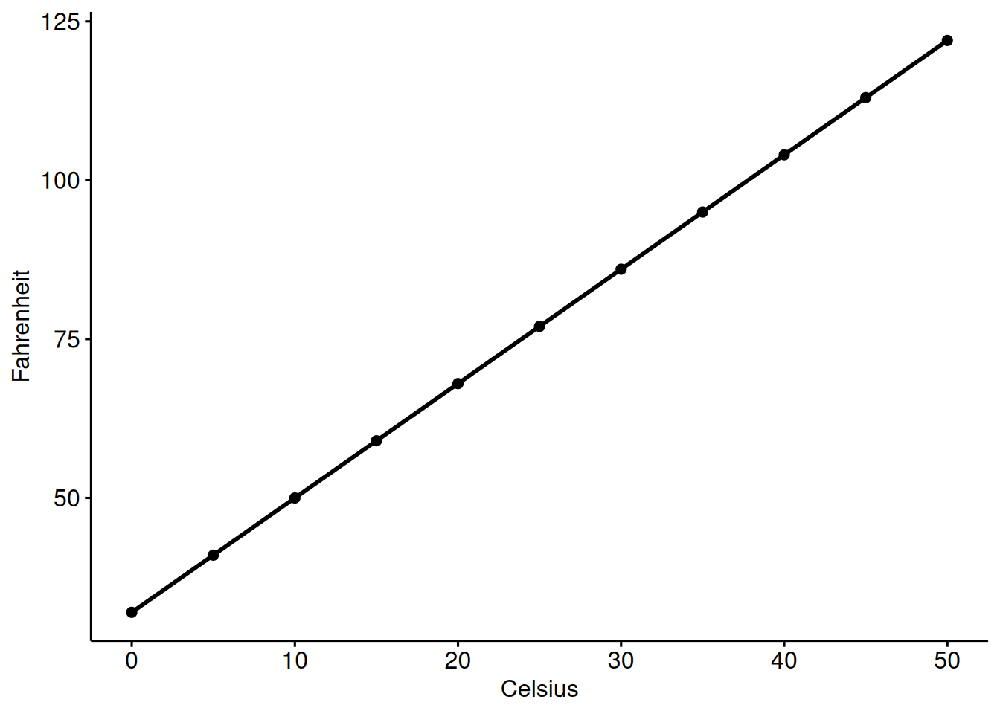

Regressão Linear Simples: É um método estatístico que nos permite resumir e estudar as relações entre duas variáveis quantitativas:
Uma variável, denotada por \(x\), é considerada como preditora, explicativa ou variável independentes.
A outra variável, denotada por \(y\), é considerada como a resposta, resultado ou variável dependente.
Usaremos os termos “preditor” e “resposta” para nos referirmos às variáveis utilizadas neste curso. Os outros termos são mencionados apenas para torná-lo ciente deles caso você os encontre em outros materiais. A regressão linear simples recebe o adjetivo “simples”, porque diz respeito ao estudo de apenas uma variável preditora. Em contraste, a regressão linear múltipla, que estudaremos mais adiante neste curso, recebe o adjetivo “múltipla”, porque diz respeito ao estudo de duas ou mais variáveis preditoras.
No slide anterior, foi possível observar que se você conhece a temperatura em graus Celsius, pode usar uma equação para determinar exatamente a temperatura em graus Fahrenheit.
Agora serão apresentadas outros exemplos de relações determinística.
Lei de Hooke:\(Y = \alpha + \beta X\), em que \(Y\) é a quantidade de alogamento em uma mola e \(X\) é o peso aplicado.
Lei de Ohm:\(I = V/r\), em que \(V\) é a tensão aplicada, \(r\) é a resistência elétrica e \(I\) é a corrente elétrica.
Lei de Boyle: Para uma temperatura constate, \(P = \alpha/V\), em que \(P\) é a pressão, \(\alpha\) é uma constante para cada gás e \(V\) é o volume do gás.
Para cada uma dessas relações determinísticas, a equação descreve exatamente a relação entre as duas variáveis. Esta disciplina não examina relacionamentos determinísticos. Em vez disso, estamos interessados em relações estatísticas, nas quais a relação entre as variáveis não é perfeita.
Primeiro devemos deixar claro quais tipos de relacionamentos não estudaremos neste curso, ou seja, relacionamentos determinísticos (ou funcionais). Abaixo está um exemplo de uma relação determinística.
library(ggpubr)
Carregando pacotes exigidos: ggplot2
cels <-seq(0, 50, by =5)fahr <- (9/5)*cels +32data <-data.frame(x = cels, y = fahr)ggscatter(data,x ="x",y ="y",xlab ="Celsius",ylab ="Fahrenheit",add ="reg.line")

Observe que os pontos de dados observados caem diretamente em uma linha. Como você deve se lembrar, a relação entre graus Fahrenheit e graus Celsius é conhecida como:
Agora iremos apresentar um exeplo de relação estatística. A variável resposta \(Y\) é a mortalidade por cancêr de pele (por 10 milhões de pessoas) e a variável preditora \(X\) é a latitude no centro de cada um dos 48 estados americanos (dados de câncer de pele dos EUA). Os dados foram obtidos na década de 1950, então o Alasca e o Havaí ainda não eram estados. Além disso, Washington, DC está incluído no conjunto de dados, embora não seja tecnicamente um estado.
Note que viver nas latitudes mais altas do norte dos Estados Unidos, diminuiria a exposição aos raios nocivos do sol e, portanto, menos risco teria de morrer devido ao câncer de pele. O gráfico de dispersão suporta tal hipótese. Parece haver uma relação linear negativa entre latitude e mortalidade por câncer de pele, mas a relação não é perfeita. De fato, o enredo exibe alguma “tendência”, mas também exibe alguma “dispersão”. Portanto, é uma relação estatística, não determinística.
Alguns outros exemplos de relações estatísticas podem incluir:
Altura e peso – à medida que a altura aumenta, você esperaria que o peso aumentasse, mas não perfeitamente.
Álcool consumido e teor alcoólico no sangue — à medida que o consumo de álcool aumenta, você esperaria que o teor alcoólico no sangue aumentasse, mas não perfeitamente.
Capacidade pulmonar vital e maços-ano de tabagismo — à medida que a quantidade de fumo aumenta (conforme quantificado pelo número de maços-ano de tabagismo), você esperaria que a função pulmonar (conforme quantificada pela capacidade pulmonar vital) diminuísse, mas não perfeitamente.
Velocidade de direção e consumo de combustível — à medida que a velocidade de direção aumenta, você esperaria que o consumo de combustível diminuísse, mas não perfeitamente.
Portanto, vamos estudar as relações estatísticas entre uma variável de resposta \(y\) e uma variável preditora \(x\)!
3.1.2 Pressupostos do modelo
Observação:
Importante destacar que o termo regressão linear significa .blue[regressão linear nos parâmetros], ou seja, da forma
\[y_i = \alpha + \beta x_i^2 + u_i\] ou da forma
\[\log(y_i) = \alpha + \beta \log(x_i) + u_i,\] também são considerados regressões lineares.
O parâmetro
\[E(Y|X = x) = \alpha + \beta x\] que representa a média da variável aleatória \(Y\), condicionada a \(X = x\), será estimada por
\[\widehat{E(Y|X=x)} = a + bx,\]
em que \(a\) e \(b\) são estimativas para \(\alpha\) e \(\beta\). A quantidade
\[e_i = y_i - \hat{y}_i = y_i - (a + b x_i), \quad i = 1, \dots, n,\] é chamada de resíduo.
Assim, o valor \(e_i\) pode ser interpretado como o erro cometido por prever \(y_i (i = 1, \dots, n)\) a partir de \(\hat{y}_i.\)
Voltando ao Exemplo (Semana 1)
Quais as estimativas do modelo de regressão linear simples de interesse?
\[\hat{y} = 390 - 6x.\]\[y_i = E(Y|X = x_i) + u_i = \alpha + \beta x_i + u_i,\] em que \(\alpha\) é o intercepto e \(\beta\) é o coeficiente angular da reta de regressão.
Na prática, nem sempre \(\alpha\) (intercepto) apresenta interpretação.
Como as estimativas devem ser interpretadas?
Voltando ao Exemplo (Semana 1)
\[\hat{y} = 390 - 6x.\]
390: valor médio de mortes por cancêr de pele em um estado com latitude central igual a zero. (Faz sentido essa interpretação?)
-6: variação média no número de mortes quando aumenta-se a latitude em 1 unidade.
Exercício: Encontre a matriz hessiana e verifique sob quais condições a mesma é definida como positiva. Ainda, discuta se os estimadores encontrados geram o mínimo da função de interesse.
3.1.3 Estimação dos parâmetros pelo método dos mínimos quadrados
3.1.4 Propriedades dos estimadores
3.1.5 Decomposição da Soma de Quadrados Total
O modelo de regressão proposto está bem ajustado? Como medir a qualidade de ajuste do modelo?
Objetivo: Construir uma medida que indique, mesmo que de modo imperfeito, a qualidade do ajuste do modelo de regressão.
\(y - \bar{y}:\) erro ao se prever \(y\) pela média geral.
\(y - \hat{y}:\) erro ao se prever \(y\) pelo valor estimado para \(E(Y|X)\).
\(\hat{y} - \bar{y}:\) “ganho” ao se prever \(y\) pelo valor estimado para \(E(Y|X)\) em comparação ao se prever \(y\) pela média geral.
Soma de Quadrados Total (SQT): \(SQT = \sum \limits_{i =1}^n (y_i - \bar{y})^2.\)
Soma de Quadrados devido aos Resíduos (SQE): \(SQE = \sum \limits_{i =1}^n (y_i - \hat{y}_i)^2.\)
Soma de Quadrados devido ao modelo de regressão (SQReg): \(SQReg = \sum \limits_{i =1}^n (\hat{y}_i - \bar{y})^2.\)
Resultado:\(SQT = SQReg + SQE\)
Na \(SQT\) temos \(n -1\) graus de liberdade.
Na \(SQE\) temos \(n -2\) graus de liberdade.
Assim, chegamos aos chamados quadrados médios:
\[QMT = \frac{SQT}{n-1} = S^2, \quad QME = \frac{SQE}{n-2} \quad \text{e} \quad QMReg = \frac{SQReg}{1}.\] - Desta forma, chegamos na estatística \(F = \frac{QMreg}{QME} \sim F(1, n-2).\)
3.1.6 Tabela de ANOVA
Esses resultados nos levam a seguinte tabela de análise de variâncias:
CV
GL
SQ
QM
F
Regressão
\(1\)
\(SQReg\)
\(QMReg\)
\(QMReg/QME\)
Resíduo
\(n-2\)
\(SQE\)
\(QME\)
Total
\(n-1\)
\(SQT\)
3.1.7 Coeficiente de Determinação
O coeficiente de determinação (explicação) é definido por
\[R^2 = \frac{SQReg}{SQT} = 1- \frac{SQE}{SQT},\] e mostra a proporção da variabilidade de \(y\) que é “explicada” pelos regressores do modelo adotado. Já o coeficiente de determinação ajustado é definido por:
\[\bar{R}^2 = 1 - \frac{SQE/(n-2)}{SQT/(n-1)}.\]
Voltando ao Exemplo (Semana 1)
Interpretação: 67% das variações das mortes por câncer de pele são explicadas pela latitude no centro de cada um dos 48 estados americanos.
Conclusão: Desta forma, parece que a posição geográfica do estado é relevante para a explicação da mortalidade por câncer de pele uma vez que tal regressor explica mais da metade das variações da variável resposta.
Exercício: Prove que, no caso do modelo de regressão linear simples com intercepto, o coeficiente de correlação linear de Pearson elevado ao quadrado é igual ao coeficiente de explicação (ou determinação) – \(R^2\). Ou seja,
3.1.8 Testes de Hipóteses sobre a inclinação e o intercepto
3.1.9 Intervalos de Confiança para a inclinação e para o intercepto
3.1.10 Intervalos de Confiança para a variância e para a média da variável resposta para um valor fixo da variável independente
3.1.11 Intervalos de Previsão
3.1.12 Teste para Falta de Ajustamento
Quando dispomos, para um ou mais valores de \(X\), de mais de um valor observado \(Y\), é possível obter uma outra estimativa da variância do erro. Essa outra estimativa de \(\sigma^2\) é dada pelo quadrado médio do resíduo de uma análise de variância em que cada valor distinto de \(X\) é encarado como um diferente “tratamento” a que está sendo submetida a variável \(Y\). Temos neste caso, portanto, dois resíduos, vamos nos referir ao primeiro, explicitamente, como “resíduo da regressão” e ao segundo, simplesmente como “resíduo”.
Seja \(K\) o número de valores distintos de \(X\), representamos por \(T_k (k = 1, \dots, K)\) os totais dos tratamentos, isto é, as soma dos valores de \(Y_i\), para cada valor distinto de \(X_i\).
Com base nas esperanças dessas soma de quadrados, justifica-se a associação de \(K-1\) e \(n - K\) graus de liberdade à \(SQTrat\) e \(SQRes\), respectivamente.
As diferenças entre as médias de tratamentos \(\bar{Y}_k\) e os respectivos valores de \(Y\) estimados pela regressão \(\hat{Y}_k\) associamos a soma de quadrados de “falta de ajustamento”, definida por
O resultado obtido mostra que a “falta de ajustamento” não significativa ao nível de significância de 5%.
Nos caso em que a “falta de ajustamento” é significativa, concluímos que o modelo linear utilizado não é apropriado, pois o quadrado médio do resíduo da regressão não estimaria corretamente a variância residual \((\sigma^2)\), uma vez que estaria incluindo um erro sistemático devido ao uso de um modelo inapropriado.
Analysis of Variance Table
Response: Y
Df Sum Sq Mean Sq F value Pr(>F)
X 1 36 36 36 0.0003234 ***
Residuals 8 8 1
---
Signif. codes: 0 '***' 0.001 '**' 0.01 '*' 0.05 '.' 0.1 ' ' 1
anova(ajuste, ajusteFA)
Analysis of Variance Table
Model 1: Y ~ X
Model 2: Y ~ factor(X)
Res.Df RSS Df Sum of Sq F Pr(>F)
1 8 8
2 3 1 5 7 4.2 0.1336
3.1.13 Análise de Resíduos
O \(í\)-ésimo resíduo e dado por
\[\hat{u}_i = y_i - \hat{y}_i, \quad i = 1,\dots, n.\] Agora iremos estudar o comportamento individual e conjunto destes resíduos, comparando com as suposições feitas sobre os verdadeiros erros \(u_i\). Existem várias técnicas formais para conduzir essa análise, mas aqui iremos ressaltar basicamente métodos gráficos.
Uma representação gráfica bastante útil é obtida plotando-se pares \((x_i, \hat{u}_i), i = 1, \dots, n\). Outras vezes, é de maior utilidade fazer a representação gráfica dos chamados resíduos padronizados,
\[\hat{z}_i = \frac{\hat{u}_i}{s^2},\]
plotando-se os pares \((x_i, \hat{z}_i)\). Outro resíduo usado é o chamado resíduo estudentizado, definido por
em que \(v_{ii} = \frac{1}{n} + \frac{x_i^2}{\sum \limits_{i=1}^n x_i^2}\).
3.1.14 Analisar dados usando o R
3.2 Regressão Linear Múltipla
Até aqui, aprendemos a trabalhar com o modelo de regressão linear simples, com uma variável explicativa, e notamos que o mesmo pode ser utilizado em diversas situações. Porém, vários problemas envolvem duas ou mais variáveis explicativas influenciando o comportamento da variável resposta \((Y)\). Qualquer modelo de regressão linear com dois ou mais regressores recebe o nome de .red[modelo de regressão linear múltipla
Agora iremos admitir que \(X_1, X_2, \ldots, X_k\) sejam variáveis independentes e \(Y\) a variável resposta. Dada uma amostra aleatória de \(n\) observações \((x_{1i}, x_{2i}, \ldots, x_{ki}, y_i), \quad i = 1, 2, \ldots, n\), o modelo de regressão linear múltipla será dado por
Desta forma, a equação acima fornece o valor esperado ou média de\(Y\)condicional aos valores dados ou fixados de\(X_1\) e \(X_2\).
Os coeficientes de regressão \(\beta_1\) e \(\beta_2\) são conhecidos como coeficientes parciais de regressão ou coeficientes parciais angulares. Seu significado é o seguinte: \(\beta_1\) mede a variação no valor médio de \(Y\), \(E(Y)\), por unidade de variação em \(X_2\), mantendo-se o valor de \(X_2\) constante. Em outras palavras, ele nos dá o efeito “direto” ou “liquido” de uma unidade de variação em \(X_2\) sobre o valor médio em \(Y\), excluídos os efeitos que \(X_2\) possa ter sobre a média de \(Y\). De modo análogo, \(\beta_2\) mede a variação do valor médio de \(Y\) por unidade de variação em \(X_2\), mantendo-se constante o valor de \(X_1\). Eles nos dá o efeito “direto” ou “liquido” de uma unidade de variação de \(X_2\) sobre o valor médio de \(Y\), excluídos quaiquer efeitos que \(X_1\) possa ter sobre o valor médio de \(Y\).
3.2.2 Abordagem Matricial
Por patricidade iremos utilizar a abordagem matricial, que no permitirar, entre outras coisas: i) encontrar o vetor de estimadores; ii) verificar as propriedade estatísticas dos estimadores; iii) obter a distribuição dos estimadores; qualquer que seja o número de variáveis independentes no modelo.
Sendo assim, podemos escrever o modelo de regressão linear múltipla como: \[\mathbf{y} = \mathbf{X} \boldsymbol{\beta} + \boldsymbol{\epsilon},\] que é conhecido como modelo linear geral.
Para determinarmos os estimadores de mínimos quadrados ordinários devemos minimizar
que é o sistema de equações normais na abordagem matricial. Assumindo que \(\mathbf{X}^\top \mathbf{X}\) é não-singular, a solução do sistema de equações normais é \[\widehat{\boldsymbol{\beta}} = (\mathbf{X}^\top \mathbf{X})^{-1}\mathbf{X}^\top \mathbf{y},\] que é o vetor de estimadores de mínimos quadrados ordinários do vetor de parâmetros \(\boldsymbol{\beta}\).
A distribuição do vetor \(\mathbf{y}\), correspondente aos valores prefixados das variáveis regressoras dados em \(\mathbf{X}\), é \(\text{NM}_n(\mathbf{X}\boldsymbol{\beta}, \sigma^2\mathbf{I})\), e portanto
O quadrado médio do erro (ou residual), dado pelo quociente \(SQE/(n-k-1)\), é portanto, uma estimativa não-tendenciosa da variância residual \((\sigma^2)\). Subtituindo \(\sigma^2\) por \(s^2 = QME\) em \(\sigma^2 (\mathbf{X}^\top \mathbf{X})^{-1}\) obtemos a matriz das estimativas das variâncias e covariâncias das estimativas dos parâmetro:
\[s^2 (\mathbf{X}^\top \mathbf{X})^{-1}.\]
É possível demonstrar que, se os erros \(\epsilon_i\) têm distribuição normal e se \(\beta_1 = \beta_2 = \cdots = \beta_k = 0\), o quociente
\[F = \frac{QMReg}{QME},\] tem distribuição \(F\) com \(k\) e \(n-k-1\) graus de liberdade. Estão, o valor \(F\) assim obtido é utilizado para testar a hipótese
Obtidas as estimativas dos desvios padrões das estimativas dos parâmetros dadas pelas raízes quadradas dos elementos da diagonal principal da matriz \(s^2 (\mathbf{X}^\top \mathbf{X})^{-1}\), podemos utilizar o valor
\[t = \frac{\widehat{\beta}_i - \beta_i}{s(\widehat{\beta}_i)},\] associado a \(n-k-1\) graus de liberdade, para testar hipóteses a respeito dos valores dos parâmetros.
Podemos, ainda, construir intervalos de confiança para os parâmetros. Escolhido o nível de confiança, e sendo \(t_0\) o correspondente valor crítico de \(t\), o intervalo de confiança para \(\beta_i\) é
Devemos ressaltar que tanto o teste \(t\) como o intervalo de confiança só são válidos se os erros \(\epsilon_i\) tiverem distribuição normal.
O coeficiente de determinação múltipla é definido por
\[R^2 = \frac{SQReg}{SQT},\] e mostra a proporção da soma de quadrados total que é “explicada” pela regressão múltipla. Já o coeficiente de terminação corrigido é definido por:
\[\bar{R}^2 = R^2 - \frac{k}{n-k-1}(1 - R²).\] ### Ajustando um modelo de regressão linear múltipla no R
O pacote wooldridge contém 115 conjuntos de dados do livro Introductory Econometrics: A Modern Approach, 7ed de Jeffrey M. Wooldridge. Para instalar o pacote via CRAN basta usar:
install.packages("wooldridge")
Para obter informações sobre os conjunto de dados, basta acessar a documentação. Por exemplo, se tenho interesse em ler a documentação do conjunto de dados wage1 (com 526 observações e 24 variáveis) basta usar:
library(wooldridge)?wage1
Iremos considerar um conjunto de dados chamado de gpa1. O mesmo foi coletado por Christopher Lemmon, um ex-aluno da Michigan State University (MSU), para uma pesquisa com estudantes da MSU no outono de 1994. Este conjunto de dados tem 141 observações e 29 variáveis.
Nosso interesse é saber qual o efeito da nota média do ensino médio (hsGPA) e da pontuação no teste padronizado utilizado para seleção de alunos (ACT) na nota média da faculdade (ColGPA).
Agora iremos interpretar os coeficientes da regressão: 0,453456 é o coeficiente parcial de regressão da hsGPA e diz que, mantida constante a influência da ACT, quando a hsGPA aumenta, por exemplo, em um ponto, a nota média da faculdade aumenta, em média, aproximadamente meio ponto.
Em outras palavras, se selecionamos dois alunos, A e B, e esses alunos tiverem a mesma ACT, mas a hsGPA do aluno A é um ponto maior do que a hsGPA do aluno B, então esperamos que o aluno A tenha uma nota média da faculdade, aproximadamente meio ponto superior a do aluno B. (Interprete o outro coeficiente!)
3.2.7 Exercício
Considere o seguinte modelo:
\[Y_i = \beta_0 + \beta_1 \texttt{Escolaridade} + \beta_2 \texttt{Anos de experiência} + \epsilon_i.\] Suponha que você deixe de fora do cálculo a variável anos de experiência. Que tipos de problemas ou vieses você esperaria encontrar?
3.2.8 Conjunto de Dados
O pacote wooldridge contém 115 conjuntos de dados do livro Introductory Econometrics: A Modern Approach, 7ed de Jeffrey M. Wooldridge. Para instalar o pacote via CRAN basta usar:
install.packages("wooldridge")
Para obter informações sobre os conjunto de dados, basta acessar a documentação. Por exemplo, se tenho interesse em ler a documentação do conjunto de dados wage1 (com 526 observações e 24 variáveis) basta usar:
library(wooldridge)?wage1
3.2.9 Intervalos de confiança
Seja \(\mathbf{x}_i^\top\) a \(i\)-ésima linha de \(\mathbf{X}\), isto é, o vetor linha com valores das variáveis regressoras e primeiro elemento igual a 1. O estimador de mínimos quadrados da esperança de \(Y\), correspondente aos valores de \(\mathbf{x}_i^\top\), é dada por:
Além disso, substituindo \(\sigma^2\) por \(s^2 = \hat{\sigma}^2 = QME\) temos que \(\widehat{Var}(\mathbf{x}_i^\top \widehat{\boldsymbol{\beta}}) = s^2 \mathbf{x}_i^\top (\mathbf{X}^\top \mathbf{X})^{-1}\mathbf{x}_i\). Obtida a estimativa da variância de \(\hat{y}_i\), podemos construir o intervalo de confiança para \(E(\hat{y}_i) = \mathbf{x}_i^\top\boldsymbol{\beta}\). Sendo \(t_0\) o valor crítico da distribuição \(t\) com \(n-k-1\) graus de liberdade e ao nível de confiança adotado, o intervalo de confiança é:
Consideremos \(X_{1h} = 2\) e \(X_{2h} = 4\). Uma vez estamos fazendo os cálculos tendo em vista o modelo com as variáveis indepedentes centradas, obtemos \(x_{1h} = 0,5\) e \(x_{2h} = 1\) e fazendo \(\mathbf{x}_h^\top = [1, 0,5, 1],\) temos que
No R se desejamos testar a hipótese \(H_0: \beta_1 = \beta_2 = 0\), basta usar os comandos abaixo:
library(car)
Carregando pacotes exigidos: carData
Anexando pacote: 'car'
O seguinte objeto é mascarado por 'package:dplyr':
recode
O seguinte objeto é mascarado por 'package:purrr':
some
linearHypothesis(fit, c("x1i=0", "x2i=0"))
Linear hypothesis test:
x1i = 0
x2i = 0
Model 1: restricted model
Model 2: Yi ~ x1i + x2i
Res.Df RSS Df Sum of Sq F Pr(>F)
1 5 128.5
2 3 3.0 2 125.5 62.75 0.003567 **
---
Signif. codes: 0 '***' 0.001 '**' 0.01 '*' 0.05 '.' 0.1 ' ' 1
Portanto, o resultado é significativo, isto é, rejeita-se, ao nível de significância de 1%, a hipótese \(H_0: \beta_1 = \beta_2 = 0\) ( \(p\)-valor = 0.003567 < 0.01).
Retornando aos cálculos para a obtenção do intervalo de confiança, temos que \(s^2\) é igual a 1. Portanto,
O mesmo resultado pode ser obtido usando o comando predict().
predict(fit, #modelo ajustadonewdata =data.frame(x1i =0.5, x2i =1), #valores de xhinterval ="confidence", #tipo de intervalolevel =0.99#nivel de confianca)
fit lwr upr
1 12 9.281205 14.7188
3.2.11 Coeficientes de correlação parcial
No início do curso apresentamos o coeficiente de correlação \(r\) como uma medida do grau de associação linear entre duas variáveis. No caso de um modelo de regressão com três variáveis, por exemplo, podemos computar três coeficientes de correlação: \(r_{12}\) (correlação entre \(Y\) e \(X_2\)), \(r_{13}\) (coeficiente de correlação entre \(Y\) e \(X_3\)) e \(r_{23}\) (coeficiente de correlação entre \(X_2\) e \(X_3\)). Note que por conveniência estamos usando o subscrito 1 para representar \(Y\). Esses coeficientes de correlação são denominados coeficientes de correlação brutos ou simples, ou ainda, coeficientes de correlação de ordem zero. Eles podem ser calculados conforme a definição dada abaixo:
Será que, digamos, \(r_{12}\), mede de fato o “verdadeiro” grau de associação (linear) entre \(Y\) e \(X_2\) quando uma terceira variável, \(X_3\), pode estar associada às outras duas? A resposta é: em geral, \(r_{12}\) não refletirá o verdadeiro grau de associação entre \(Y\) e \(X_2\) na presença de \(X_3\).
Precisamos de um coeficiente de correlação independente da influência, se é que ela existe, de \(X_3\) sobre \(Y\) e \(X_2\). Esse coeficiente de correlação pode ser obtido e é conhecido como coeficiente de correlação parcial. Conceitualmente, é semelhante ao coeficiente parcial de regressão. Definimos
\(r_{12,3} =\) coeficiente de correlação parcial entre \(Y\) e \(X_2\), mantendo \(X_3\) constante;
\(r_{13,2} =\) coeficiente de correlação parcial entre \(Y\) e \(X_3\), mantendo \(X_2\) constante; e
\(r_{23,1} =\) coeficiente de correlação parcial entre \(X_2\) e \(X_3\), mantendo \(Y\) constante.
Esses coeficientes de correlação parcial podem ser facilmente obtidos por meio do coeficiente de correlação simples ou de ordem zero:
\[r_{12,3} = \frac{r_{12} - r_{13}r_{23} }{\sqrt{(1 - r_{13}^2)(1 - r_{23}^2)}}, \quad r_{13,2} = \frac{r_{13} - r_{12}r_{23} }{\sqrt{(1 - r_{12}^2)(1 - r_{23}^2)}} \quad \text{e} \quad r_{23,1} = \frac{r_{23} - r_{12}r_{13} }{\sqrt{(1 - r_{12}^2)(1 - r_{13}^2)}}.\] As correlações parciais dadas acima são chamadas de coeficientes de correlação de primeira ordem. Por ordem entendemos o número de subscritos secundários.
3.2.12 Interpretação dos coeficientes de correlação simples e parcial
No caso de duas variáveis, o \(r\) simples tem um significado objetivo: mede o grau de associação (linear) entre a variável dependente \(Y\) e a única variável explanatória, \(X\). Mas, quando além do caso de duas variáveis, precisamos estar muito atentos à interpretação dos coeficientes de correlação simples. Na equação de \(r_{12,3}\), por exemplo, observamos o seguinte:
Mesmo se \(r_{12} = 0\), \(r_{12,3}\) não será igual a zero a menos que \(r_{13}\) ou \(r_{23}\), ou ambos, sejam iguais a zero;
Se \(r_{12} = 0\) e \(r_{13}\) e \(r_{23}\) forem diferentes de zero e apresentarem o mesmo sinal, \(r_{12,3}\) será nagativo, mas se apresentarem sinais contrários, será positivo. Um exemplo esclarecerá isso. Seja \(Y =\) rendimento da colheita, \(X_2 =\) precipitação pluviométrica e \(X_3 =\) temperatura. Suponha que \(r_{12} = 0\), ou seja, que não haja associação entre rendimento da colheita e chuva. Suponha, ainda, que \(r_{13}\) seja positivo e \(r_{23}\), negativo. Portanto, \(r_{12,3}\) será positivo, isto é, mantendo a temperatura constante, há uma associação positiva entre rendimento e chuva. Esse resultado aparentemente paradoxal não é surpreendente. Como a temperatura, \(X_3\), afeta tanto o rendimento \(Y\) quanto a precipitação pluviométrica \(X_2\), para encontrarmos a relação líquida entre rendimento da colheira e chuva, precisamos remover a influência da variável “incômoda” temperatura. Esse exemplo mostra como podemos ser enganados pelo coeficiente de correlação simples.
Os termos \(r_{12,3}\) e \(r_{12}\) (e comparações semelhantes) não precisam ter o mesmo sinal.
No caso de duas variáveis, vimos que \(r^2\) situa-se entre 0 e 1. A mesma propriedade é valida para o quadrado dos coeficientes de correlação parcial.
Suponha que \(r_{13} = r_{23} = 0\). Isso significa que \(r_{12}\) também é zero? O fato de \(Y, X_3, X_2\) e \(X_3\) não serem correlacionados, não significa que \(Y\) e \(X_2\) não são correlacionados.
Note que a expressão \(r_{12,3}^2\) pode ser denominada coeficiente de determinação parcial e pode ser interpretada como a proporção da variação de \(Y\) não explicada pela variável \(X_3\), que foi explicada pela inclusão de \(X_2\) no modelo. Conceitualmente, é semelhante a \(R^2\). Observe as seguinte relações entre \(R^2\) e os coeficientes de correlação simples e os coeficientes de correlação parcial:
Note que \(R^2\) não diminui quando se inclui uma variável explanatória no modelo, o que pode ser visto com base na segunda equação apresentada no slide anterior. Essa equação informa que a proporção da variação de \(Y\) explicada conjuntamente por \(X_2\) e \(X_3\) é a soma de duas partes: (i) a parte explicada apenas por \(X_2 (= r_{12}^2)\) e (ii) a parte não explicada por \(X_2 (= 1 - r_{12}^2)\) multiplicada pela proporção explicada por \(X_3\) depois de manter a influência de \(X_2\) constante. Agora, \(R^2 > r_{12}^2\) desde que \(r_{13,2}^2 > 0\). Na pior das hipóteses será igual a zero, caso em que \(R^2 = r_{12}^2\).
3.2.13 Exemplo
Considere o exemplo numérico da semana 11 (slide 5). Vamos calcular, inicialmente, os valores dos coeficientes de correlação simples:
estimate p.value statistic n gp Method
1 0.9192771 0.02719563 4.045199 6 1 pearson
ou usando o comando pcor() do mesmo pacote. Qual é o resultado impresso quando usamos
pcor(data)$estimate
3.2.14 Seleção de variáveis regressoras
Vamos apresentar os seguinte procedimentos:
todas as regressões possíveis;
método “passo a frente” (forward);
método “passo atrás” (backward);
método “passo a passo” (stepwise).
Todas as regressões possíveis: Suponha que temos \(k\) variáveis regressoras. O procedimento consiste em fazer os ajustes de todos os modelo possíveis. Na prática, este procedimento não é viável se o valor de \(k\) é grande. Para a comparação dos modelos, vamos considerar os seguintes critérios:
estatística \(C_p\) de Mallows; e
\(R^2\) ou \(R^2\) ajustado.
Outros critérios podem ser utilizados, por exemplo AIC, SBIC, SBC, entre outros.
Muitos procedimentos estão disponíveis para selecionar um subconjunto de um conjunto de \(k\) variáveis regressoras candidatas em um problema de regressão linear múltipla. Mas suponha que só escolhamos \(p\) regressores \((p \leq k)\) e obtemos a SQE da regressão usando esses \(p\) regressores. Um método comumente usado é realizar todas as regressões e comparar os resultados com base na estatística \(C_p\) de Mallows. Para um determinado modelo com \(p\) parâmetros
\[C_p = \frac{SQE_p}{\hat \sigma^2} - n + 2p,\] em que \(SQE_p\) é a soma de quadrados do erro para o modelo a ser considerado, \(n\) é o número de observações e \(\hat \sigma^2\) e uma estimativa da variância do erro, \(\sigma^2\). O quadrado médio do erro (QME) para o modelo completo é frequentemente usado como estimativa de \(\sigma^2\).
Vários textos recomendam plotar \(C_p\) contra \(p\) para todas as regressões possíveis e escolher o modelo com \(C_p\) baixo ou com \(C_p\) próximo de \(p\).
No R existe a função ols_mallows_cp() do pacote {olsrr}. E para gerar todos os possíveis modelos podemos usar a função ols_step_all_possible() do mesmo pacote.